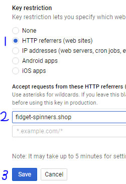

Created: 4/9/2017
By: R3dRidl3
Thank you for purchasing my plugin. If you have any questions that are beyond the scope of this help file, please feel free to email via my user page contact form here. Thanks so much!
This plugin is for all those people who are struggling with Google saying their images can be optimized better. We make use of the Google PageSpeed API. Therefor it has the exact same compression as Google PageSpeed. It just works out of the box (if API key is set).
The best of it, we do NOT make the image a lower quality one!
Upload the plugin and activate it.
After activation you will need to get an PageSpeed Insights API key from console.developers.google.com.
If you have no project yet here, first create a project. After you have done this you can see the Library menu on the left side. Once you click it search for: PageSpeed Insights API. It's under the "Other popular API's". Click this link. There you can Enable the API for this project.
Once enabled you will need to set Credentials for the project. This is allso in the left side menu. You will see a button here "Create credentials" click it and choose "API key". After this your key will be generated. You must restrict the API key to your specific website with restrict key. Do this on "HTTP referrers". You can set your domain like the following: "domain.tld", without the quotes. This is what is checked when we call the API, so it is a MUST.

Copy your API key and go back to your WP admin and go to "Media" -> "Google Image Optimizer Settings". Here you can save the API key.
There is allso an option if the plugin should make backups or not. If you enable this, you can restore original files if you wanted.
The API does have it's limits:
There is a maximum of 25000 calls per day to this API and a max of 100 requests every 100 seconds.
Once you saved the API key, there is nothing to do than just upload your images.
No other scripts have been used besides the Google PageSpeed API
Once again, thank you so much for purchasing this plugin. As I said at the beginning, I'd be glad to help you if you have any questions relating to this plugin. No guarantees, but I'll do my best to assist.
R3dRidl3